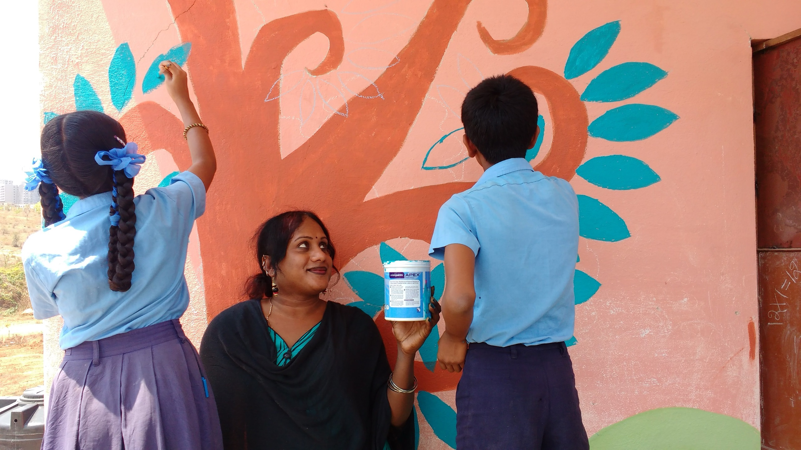
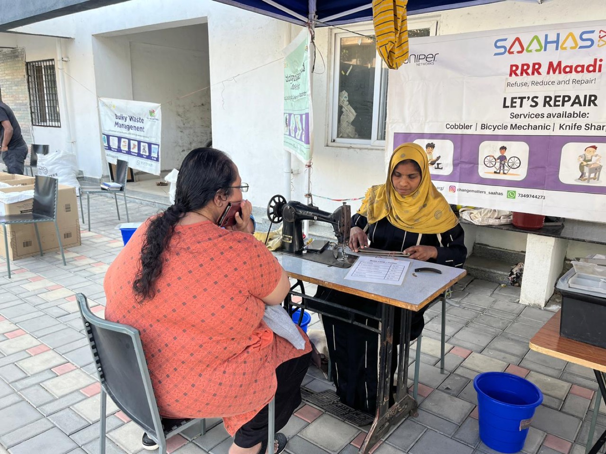
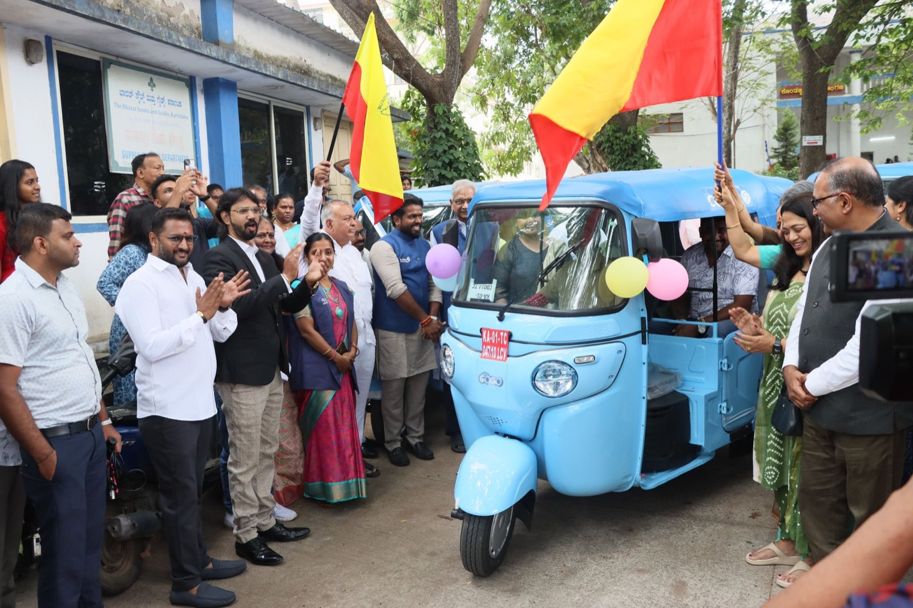
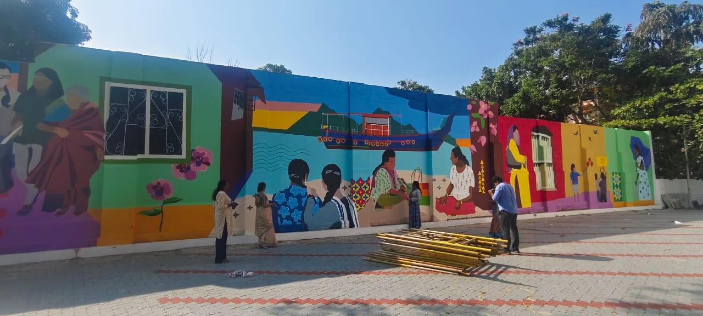
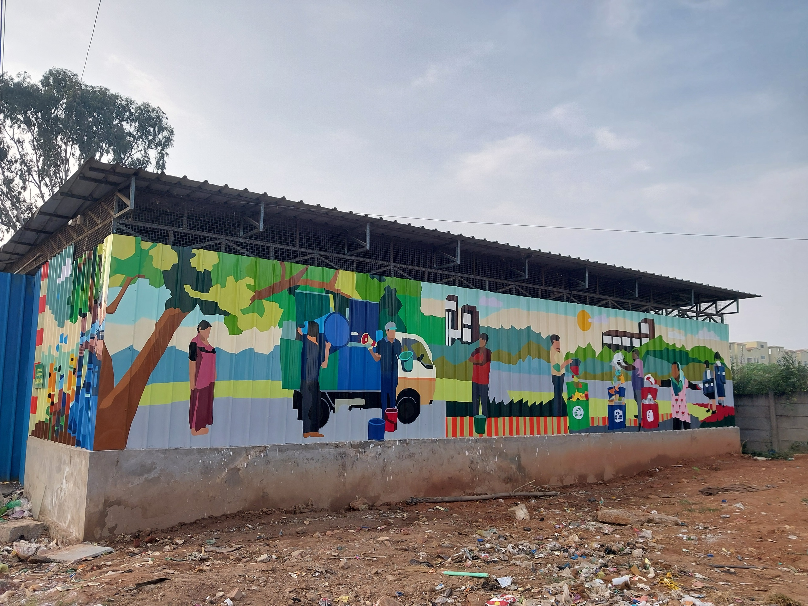

The fix is local
Solve it in Malleshwaram. Share it with the city.
About
Small Grants Program
Neighbourhood fixes, funded in Bengaluru and shared with the world. Small, short-term grants for people already solving neighbourhood problems, who just need some help to get across the finish line.
Grant size
₹2,00,000
Grants from ₹50,000. Sized to what your fix needs.
- Seed a pilot
- Kits and materials
- Build it out
- Finish the fix
- 6 monthsGrant duration
- ~10Grants in this round
- 0Interim reports, just a story at the end

Who it's for
For people already fixing their corner of Bengaluru.
- Environment
- Public spaces
- Community wellbeing
- Based in Bengaluru
- Tackling a specific neighbourhood problem
- With an idea that could travel


How it works
Rolling call. Six weeks, give or take.
Applications are reviewed as they come in. No deadline to chase.
Apply now-
01
You apply Any time
Fill in the short application form linked at the end of this page.
-
02
We get to know you A call or a visit
A short conversation and, if it helps, a visit to see the problem and your work on it.
-
03
The decision About 6 weeks
You hear back from us, yes or no, within about six weeks of applying.
-
04
Funds arrive Up to 6 months to deliver
The grant is transferred and you get on with the fix.
What we ask at the end
- A story or playbook of your fix
- A fund utilisation certificate
- That's it. No interim reports.

Is this you?
Thirty seconds to see if your idea fits.
Three questions. Nothing is saved or sent.
I'm working on in
-
01
Are you based in Bengaluru?
-
02
Are you tackling a specific neighbourhood problem or opportunity?
-
03
Could your idea or solution work in another neighbourhood too?
FAQs
Questions, answered.
The short version of how the program works. Anything else, just ask.
01What is the NoTF BLR Small Grants Program?
It awards small, short-term grants to individuals, collectives and organisations who are solving neighbourhood problems in Bengaluru.
02Who can apply?
Individuals, informal collectives (such as resident groups) and registered organisations working on a specific neighbourhood problem in Bengaluru.
03What will you fund?
Work that helps you finish a neighbourhood fix: materials, small equipment, local labour, events and outreach. We prefer ideas already underway, and ideas that could work in another neighbourhood too.
04What is the grant value and duration?
Between ₹50,000 and ₹2,00,000, for up to 6 months.
05How many grants are available?
About 10 in this round.
06What does the application process look like?
Apply online, have a short conversation with us, and hear our decision within about six weeks. Applications are reviewed as they come in.
07What are the reporting requirements?
No interim reports. At the end, a story or playbook of your fix and a fund utilisation certificate. Don’t worry, we’ll help.
Still have questions? Write to notf.blr@socratusfoundation.in

Applications open · Rolling · Bengaluru only
Ready to finish your fix?
The fix is local. The idea travels. If you're already working on a neighbourhood fix and just need a push across the finish line, we'd love to hear from you.